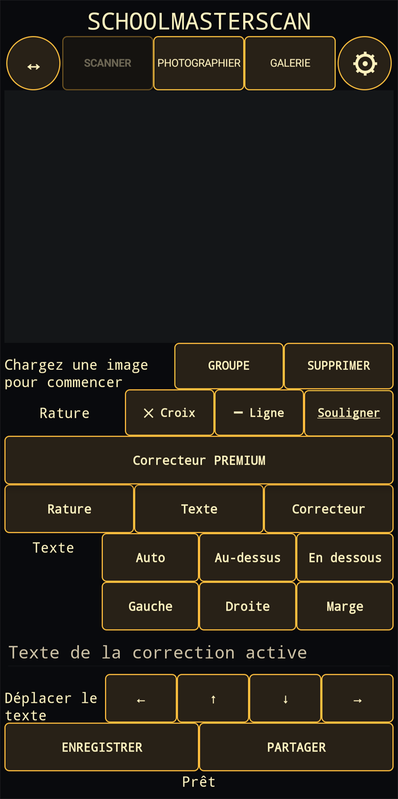

1. Acquérir une image
Scanner est le mode par défaut : SchoolMasterScan ouvre le scanner de documents intégré à Android/Google Play services, puis renvoie le document dans l’éditeur. Vous pouvez aussi utiliser Photographier ou choisir une image existante dans la Galerie. Le bouton ↔ adapte l’image à la zone de travail ; la roue dentée ouvre les paramètres.
2. Sélectionner et marquer le texte
Après la reconnaissance du texte, touchez un mot dans l’image. Groupe étend la sélection et Supprimer retire une sélection. Vous pouvez ensuite appliquer une croix, une ligne ou un soulignement. Les couleurs et le style par défaut se règlent dans les paramètres.
3. Ajouter une correction
Saisissez le texte dans le champ de correction active et choisissez sa position : automatique, au-dessus, en dessous, à gauche, à droite ou dans la marge. Les flèches permettent un ajustement final précis.
Correcteur Premium
Le correcteur de type « blanc » est une fonction Premium optionnelle disponible par achat séparé. Il permet de couvrir une partie de l’image puis, si nécessaire, d’ajouter un nouveau texte dans la zone corrigée.
4. Enregistrer ou partager
Enregistrer crée l’image JPEG finale dans la galerie de l’appareil. Partager ouvre le menu de partage Android pour l’envoyer vers une autre application. Vérifiez toujours la reconnaissance et les corrections avant de terminer.